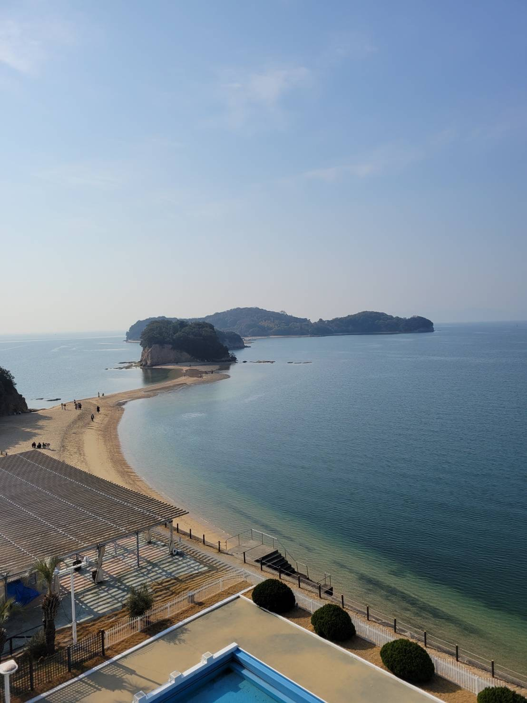
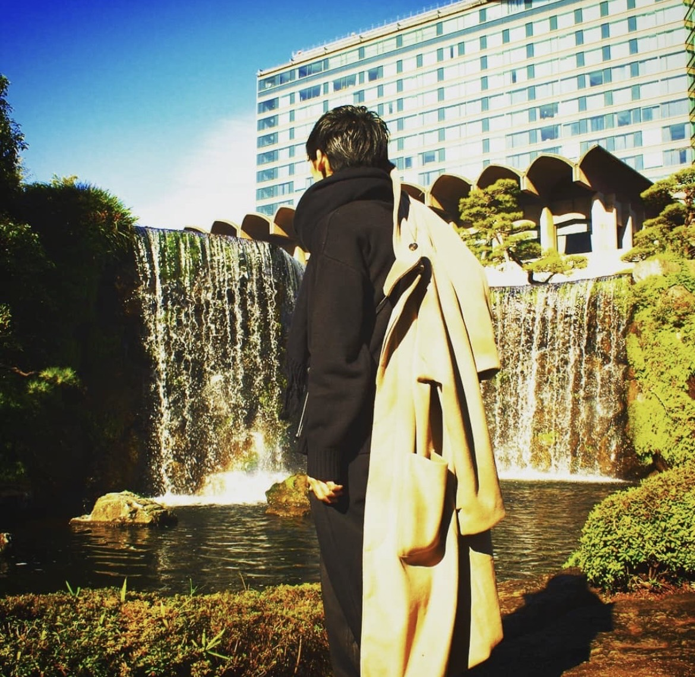

自己紹介サイト
～趣味紹介～

旅
休日中は高頻度で遠出しています！
海外は過去6カ国（コロナ前）、国内は39都道府県を弾丸旅形式で訪れたり、
コロナ禍も相変わらずにエンジョイ中！
（途中で携帯を滝壺に落下させたり、野宿を余儀なくされるアクシデントも）
移動費には人一倍お金をかけている自信があり、来年は念願の海外まで足を伸ばします！
被写体モデル
とあるミスコン出場者とのコネクトがキッカケで始めた活動！
関東地区などに出向き、SNS上でカメラマンと被写体さんを募集しイベントを開催した経験もあります。
活動前後の変化は、服装や美容など、総合的な身なりに対し一倍敏感になりました！
数日間は暴食気味で、活動からはやや遠ざかっている様子…
ボルダリング
た昨今話題のインドアスポーツに、2年ほど前より奮闘中です。
全身の筋肉の動作を意識的に考えながら、地上3.5メートルを登る極限状態！
体全体がきしみながらも、自身の成果が明確に現れる達成感がたまらないです！
重度の筋肉痛が全部位に降り掛かる事もまた醍醐味。
温泉
以前も変わらず嗜好でしたが、おんせん県に引っ越して以降、急加速的に目醒めた新たな趣味！
原湯のみならず、風情溢れる内装も好みであり、終には温泉アルバイトまで始めました！
明方の寒暖差を感じながら目覚めのひと時をくつろぐ事が数ヶ月間のマイブームです。
その他の主要情報はコチラ！
TOPへ
スキル
将来の抱負
秘密の情報